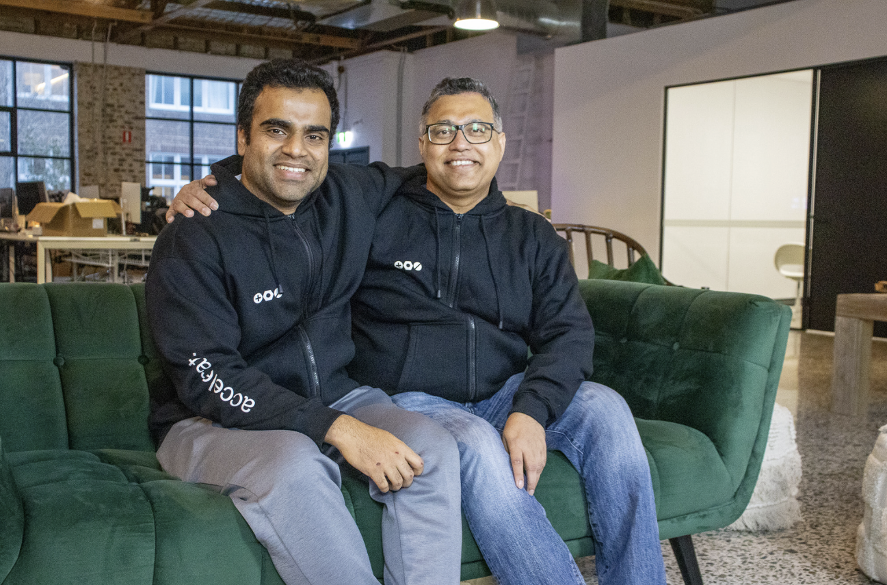
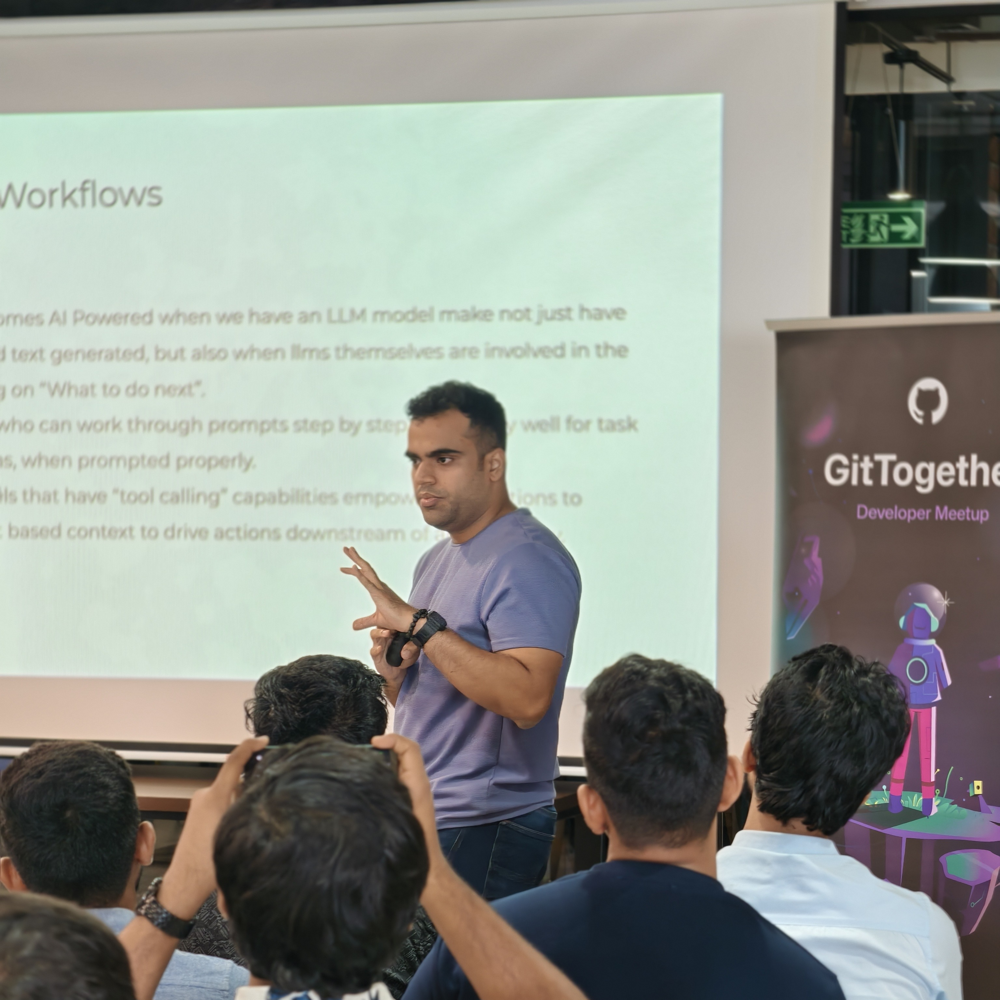

Building Games for Fun.
Started pursuing the art of building games my 10 year old self would fawn over.

Raajas Sode
I indulge in AI oriented software development, Focusing on Data quality as the focal point. For the past few years I have worked for several startups in a wide range of use cases, ranging from marketing, finance, fashion and even hardware. This website is a small window into the kind of work I do.
After quitting my job as a Data Engineer in late November 2023, I dove head first into building startups with nothing but grit and knowledge I gained
through experience gained from dealing with high stakes projects. Starting in March 2024, I began my journey of understanding requirements, clients and the market,
A full one year was a whirlwind of learning new frameworks, reading papers, understanding technologies and talking to like-minded people building on their passion.
After finishing a year long sprint of what could never be considered as conventional work experience, I find myself in a position of autonomy,
something surreal I've never experienced before in my life. Having learned all that I have, savoring moments of victory and and learning from many many failures.
Working on baremetal AI servers, writing AI agents, creating seamless frontend for chatbots, everything feels like an absolute dream. The time I didnt' spend coding,
I spent sharing ideas on AI, games and Large Language models.


Started pursuing the art of building games my 10 year old self would fawn over.
I have spent quite some time working on machines with AMD GPUs to build frameworks and APIs around AI Training. Credit where its due…

Creating OLAP data models and dashboards locally using duckdb and dbt

Creating OLAP data models and dashboards locally using duckdb and dbt